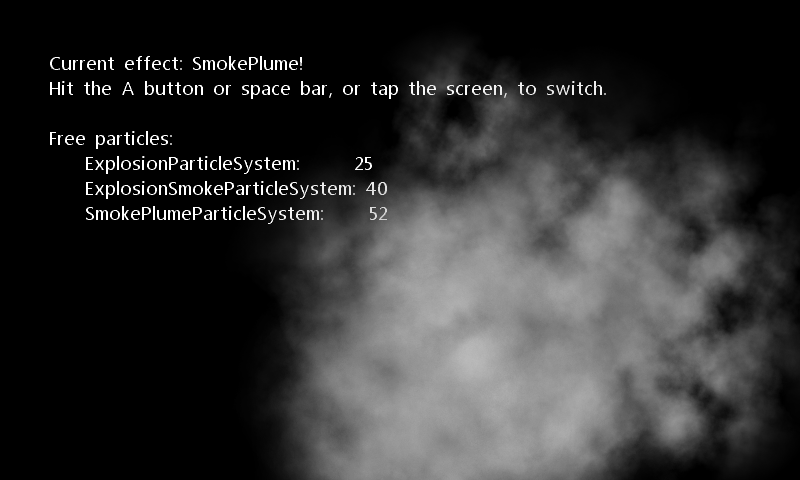

Particle Sample
Ported from Microsoft's XNA 4.0 Particle Sample.
Source for this sample on GitHub ↗

Play ▸Opens in a new tab. Release Space, press gamepad A, or tap the canvas to switch effects.
About this sample
Three reusable particle systems create two effects: a fiery additive explosion with lingering smoke, and a wind-blown plume. Particles are allocated once, then returned to a pool and reused as each effect runs.
Controls
| Action | Keyboard | Touch | Gamepad |
|---|---|---|---|
| Switch effect | Release Space | Tap the canvas | A |
| Exit | Escape | — | Back |